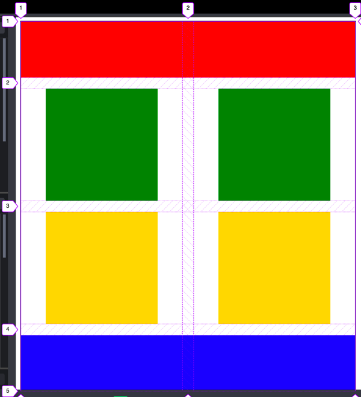
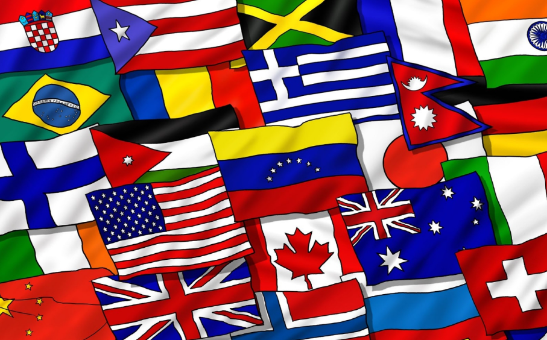
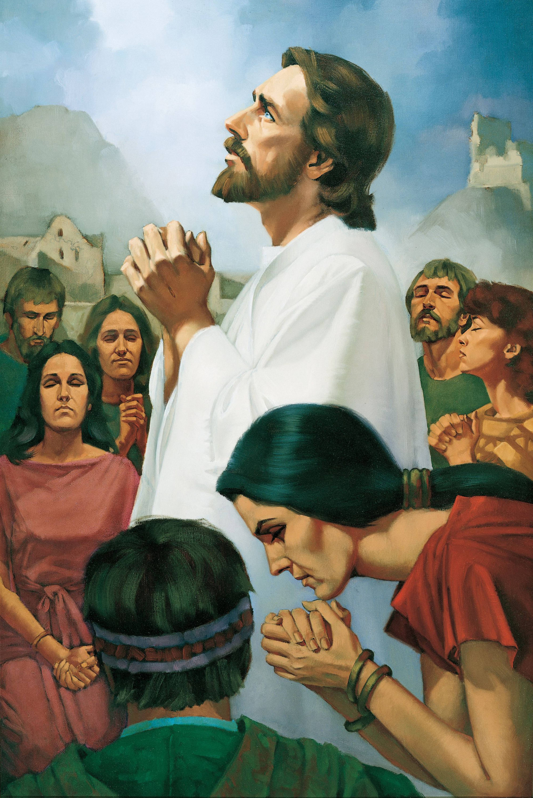

Check out all of my ICE Challenges Here!
Admittedly I didn't learn to much from this assignment. I asked AI for help and did my best to make it my own so that the AI wasn't just doing the work for me, but I realized that I ended up finishing the assignment without having learned much aside from a few basic things. However, this did teach me to be more careful in how I ask AI for help, as I now specify that I want it to teach me in a way to help me remember.

This ICE challenge gave me a better understanding of how css is connected to html, and how to read hmtl itslef to understand what must be changed.

This ICE challenge taught me how to position things using grid. I've probably learned more on this challenge than any other.

This challenge encouraged me to get creative and see how much I could learn about styling within an hour. I learned how to center objects and text and manipulate the background colors.

Here I learned how to position things while also taking parents and children into account on how they affected each other. I also learned how to take shortcuts, as I did not need every tool it gave me to complete the assignment.

Here I learned how to decrease an image's quality in order to make a website run smoother.

This one was a simple one, but here I learne how to create tables in html.
CortInc © 2026 - Cort Folsom